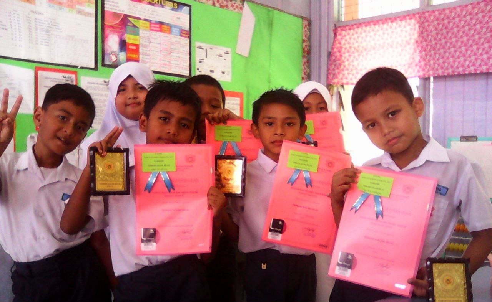

UiTM Machang
Diploma in Information Management
2023 – Present
- Learning web development fundamentals (HTML, CSS)
- Database & records management
- Information retrieval & digital library skills
- Active in Badminton & Silat tournament
- Active in class presentations & clubs

Secondary School
SPM | Sekolah Kebangsaan Kampong Chengal
2018 – 2022
- Active in badminton club
- Participated in school events
- Strong teamwork & leadership skills

Primary School
Sekolah Kebangsaan Kuang (grade1-grade5)
2013 - 2016
Sekolah Kebangsaan Sri Ketereh (grade5-grade6)
2016 - 2017
- Joined many school programs
- Leader of the kompang club
- Class leader for 3 years